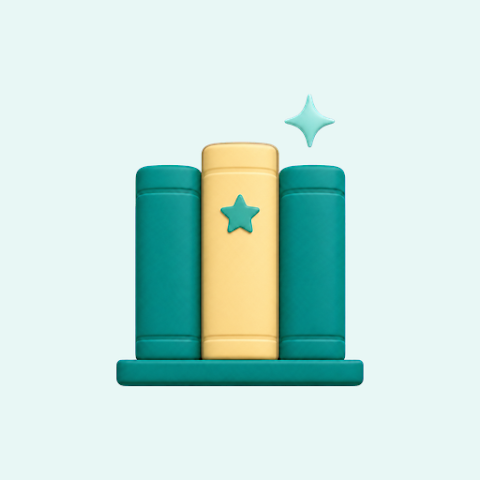

More than a star rating
A book can change how you think, remind you of someone or give you a sentence worth keeping. Every Read gives those moments a home.

Every ReadRemember what mattered
Capture thoughts, quotes and page references while they are fresh, then return to them whenever you need.
A book can change how you think, remind you of someone or give you a sentence worth keeping. Every Read gives those moments a home.
Keep each entry connected to its title, date and optional page reference so your reading history becomes meaningful.
No public posting is required. Your journal can remain entirely personal.